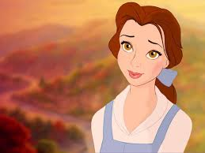
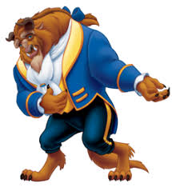
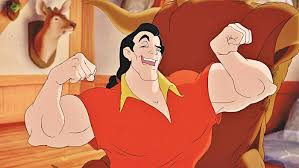
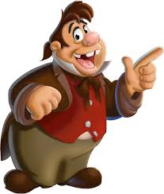
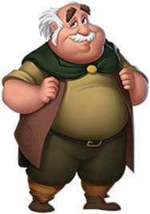
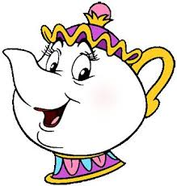
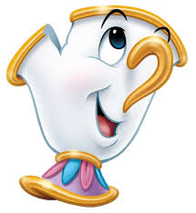
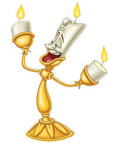

Cast : The Beauty And The Beast

"Belle"
The intelligent and kind-hearted protagonist who loves reading and dreams of adventure.

"Beast"
A prince cursed to live as a beast until someone loves him despite his appearance.

"Gaston"
The arrogant and self-absorbed village hunter who desires Belle.

"LeFou"
Gaston's loyal sidekick, who often provides comic relief.

"Maurice"
Belle's eccentric inventor father.

"Mrs.pott"
The enchanted teapot who serves as a motherly figure to Belle.

"Chip"
Mrs. Potts’ young son, an enchanted teacup.
